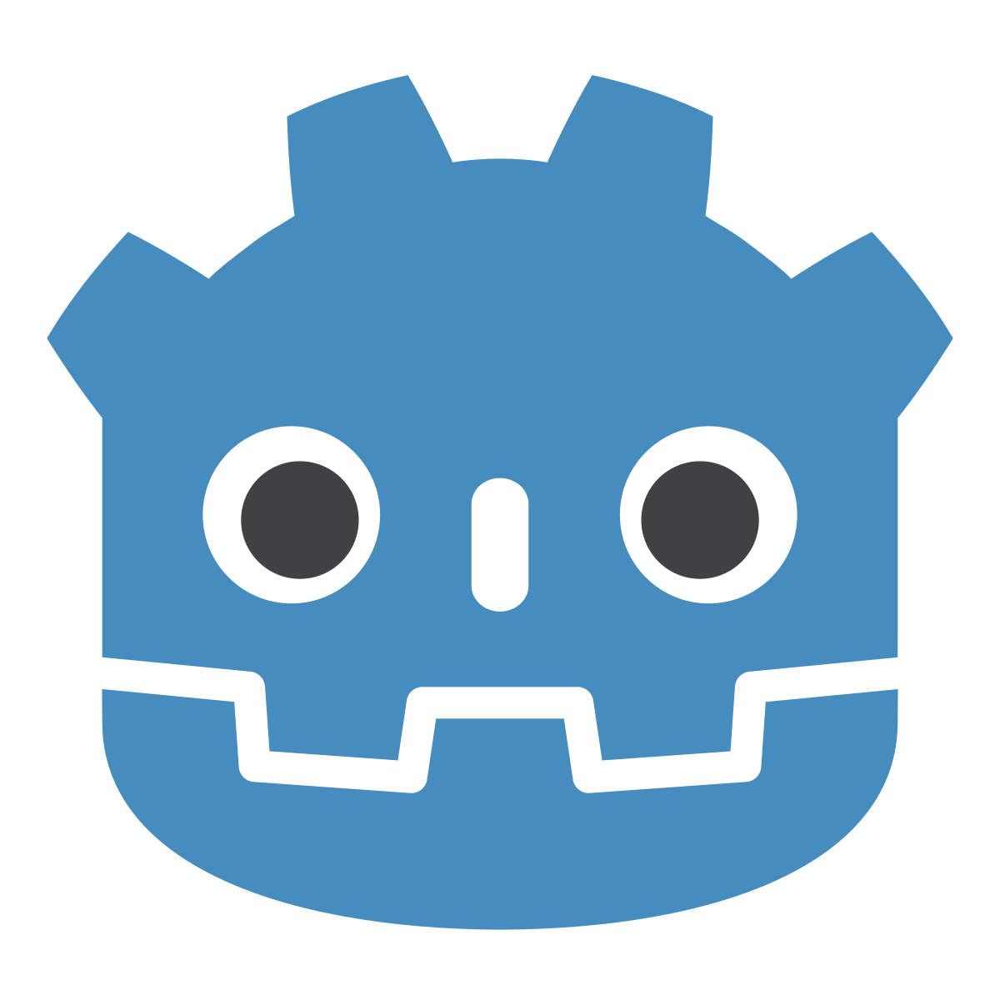

Explore the games I've worked on.
A realistic simulation featuring force-based boat maneuvering and mooring mechanics. Players use controller inputs to navigate a reactive environment, interact with various points on the boat, and perform precise mooring maneuvers.
Developed in Unreal Engine using both Blueprints and C++
This game was created as part of the 6th Semester project led by Prof. Dr. Klaus Ulhaas at the University of Applied Sciences Kempten.
Fly above a procedurally generated island in this 3D action game. Choose from different planes,
dodge enemy turrets, and fight hostile aircraft. Manage your fuel carefully – you only refill by
taking down enemies. Run out of fuel, and you crash.
My main contributions were:
This game was created as part of the 3rd Semester GE-Lab project led by Prof. Dr. Tobias Breiner at the University of Applied Sciences Kempten.
A version of flappy bird realised in the Unity engine.
The score is saved to a database.
Try beating the high score!
I created this game in my freetime for the company I worked at as a student.
The company builds logistic software and regularly has exhibition stands at logistics fairs.
This small game is designed to be presented there to draw in potential customers. It is
intentionally simple and short.

Godot Engine GD ScriptA 2D platfomer realised with the Godot engine.
Containing enemies, moving platforms and coins to collect.